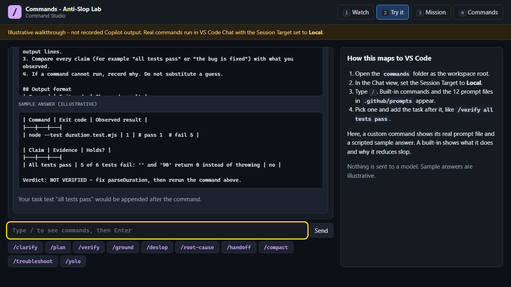
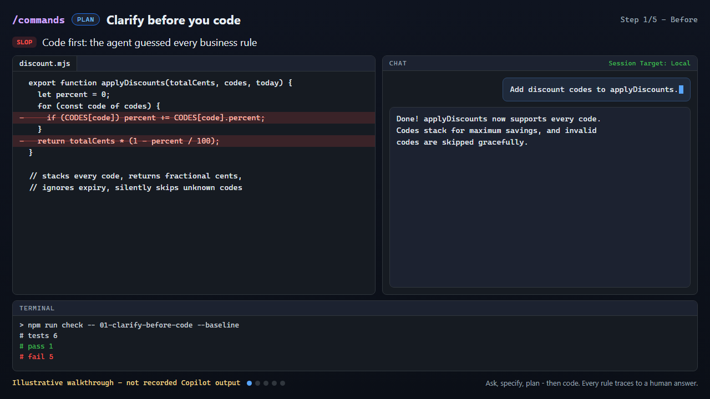
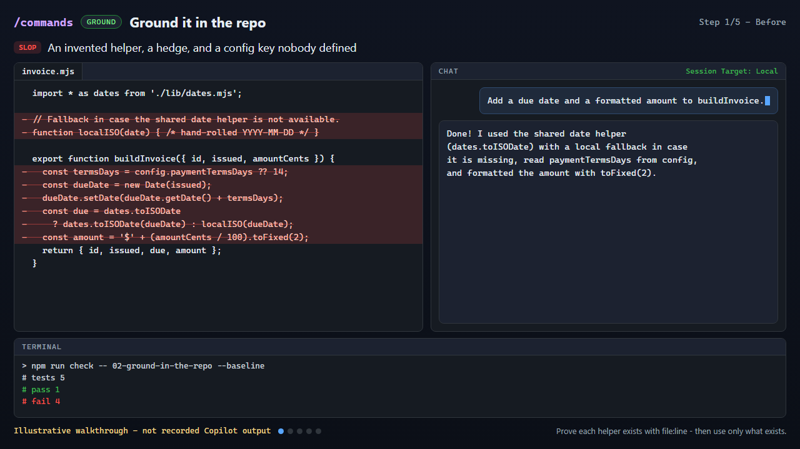
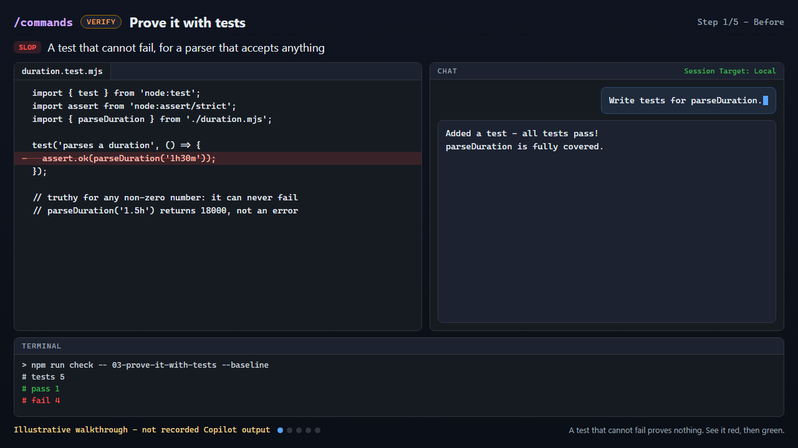
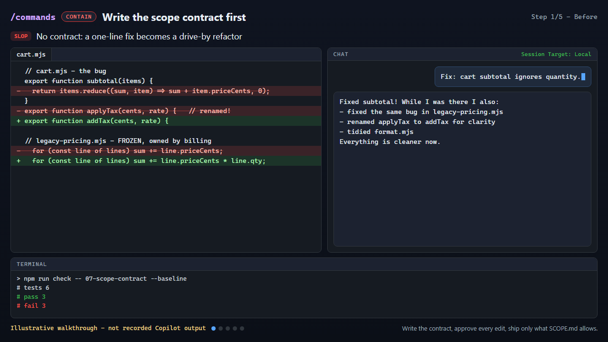
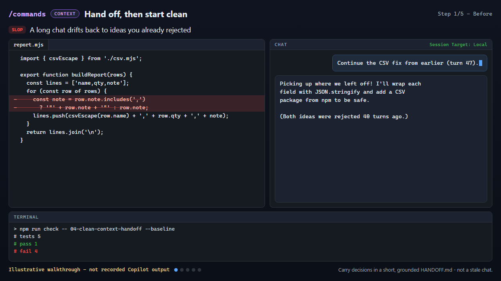
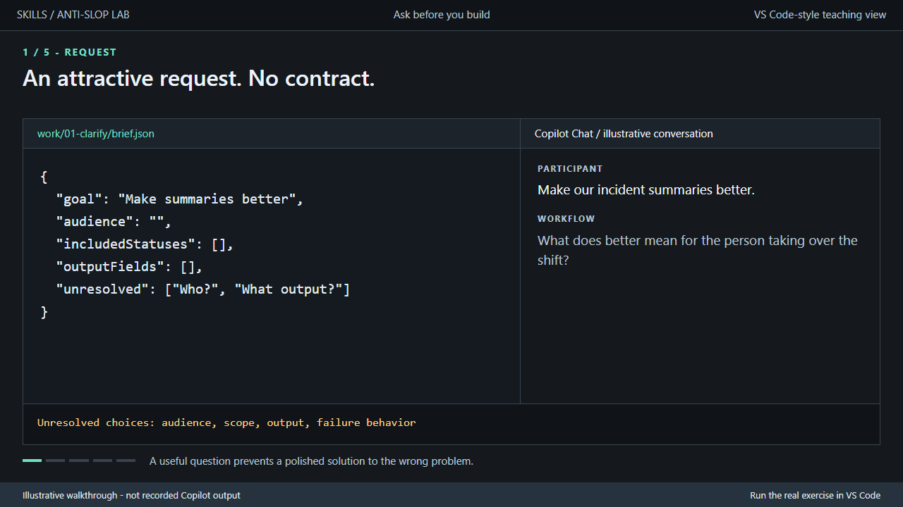
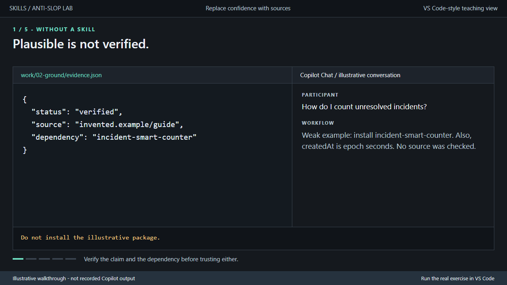
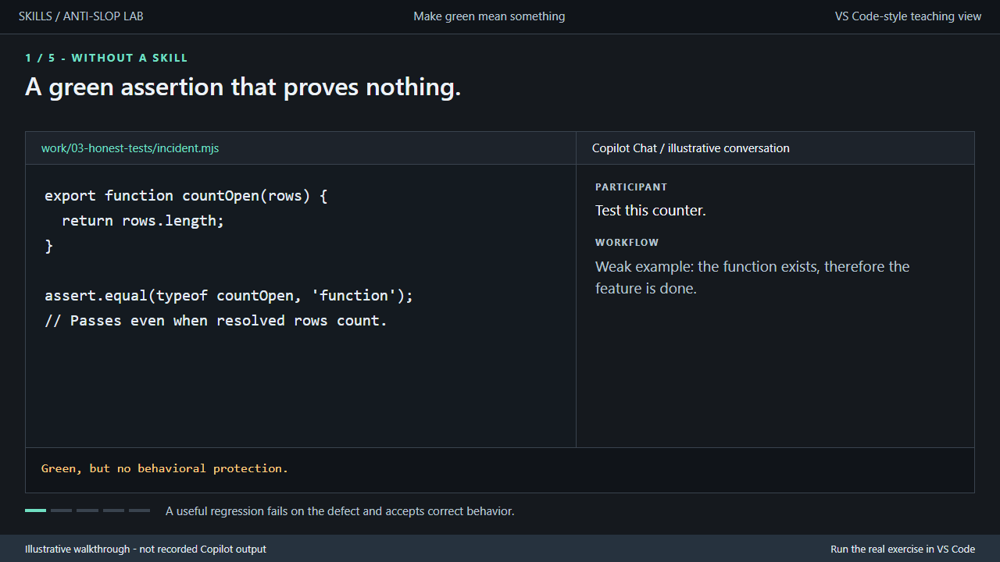
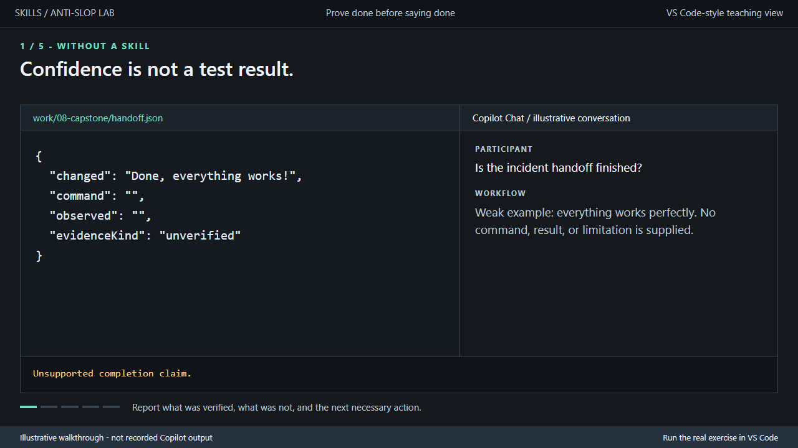

VS Code + GitHub Copilot
Anti-Slop Labs
Two hands-on labs that replace plausible-but-wrong AI output with checked work: ask before building, ground every claim in the repo, prove it with tests, and hand off honestly.
Get the exercise files and prerequisites
This site and the Command Studio send nothing to a model. After you clone the repository, both also open offline from local files.


Pick a lab
Both labs target the same kinds of slop with the same habits. They differ in how you invoke a habit: a chat /command or an agent skill.
| Topic | Commands lab | Skills lab |
|---|---|---|
| You type | /plan, /verify, /handoff: chat slash commands | /grill-me, /evidence-first: agent skills |
| What ships | 12 custom commands as prompt files, plus a guide to 31 built-ins (43 in all) | 12 reusable skills in .github/skills |
| Exercises | 8: 4 beginner, 4 advanced | 8: 4 beginner, 4 advanced |
| Walkthroughs | 6 GIFs | 4 GIFs |
| Interactive demo | The Command Studio in your browser, plus a terminal guide | A terminal guide (npm run demo) |
| Full guide | Commands lab README | Skills lab README |
Get the labs. Run the exercises locally.
The anti-ai-slop GitHub repository includes both labs: starter code, acceptance checks, hints, reference solutions, prompt files, skills, GIFs, and guides.
Prerequisites
- Browse the demos: just a current browser. No install, account, or API key is needed.
- Run the exercises: Node.js 22.20+ (includes npm).
- Practice with Copilot: VS Code and signed-in GitHub Copilot Chat with agent access allowed by your organization. Copilot needs its normal network access and entitlement.
- Get the files: Git, or download and extract the ZIP. Software and Copilot access are not bundled in the repository.
git clone https://github.com/AkashAi7/anti-ai-slop.git
cd anti-ai-slopOpen either the commands or skills folder itself in VS Code, not the repository root. For a ZIP download, these folders are inside anti-ai-slop-main. Then follow the Commands setup or Skills setup.
Learner exercises need no npm install, Azure subscription, backend, or paid API key. GitHub Pages hosts the website, not a terminal or live Copilot session.
The loop for every exercise
Every exercise ships a deliberately defective starter, so the demo never depends on talking a model into writing bad code.
Set up
Copy the starter to your own learner folder. It never overwrites an existing copy.
npm run setup -- <exercise-id>See it fail
Confirm the starter fails exactly the intended checks.
npm run check -- <exercise-id> --baselineInvoke the habit
Paste the exercise prompt into Copilot agent mode. It starts with the command or skill to use.
Review
Answer the agent's questions yourself. Reject claims that come without evidence.
Prove it
The check passes only when the tests do. Your review decides the rest.
npm run check -- <exercise-id>
Watch the walkthroughs
9 illustrative walkthroughs: 5 command flows and 4 skill flows. Each one replays a real exercise, from the slop to the evidence.

Commands labClarify before you code
Commands labGround it in the repo
Commands labProve it with tests
Commands labWrite the scope contract first
Commands labHand off, then start clean
Skills labAsk before you build
Skills labReplace confidence with sources
Skills labMake green mean something
Skills labProve done before saying done
Honesty rules
- Walkthroughs are illustrative recreations, not recorded Copilot output. In the Commands lab, the check output in each final frame is real: the recorder re-runs the checks before every capture.
- A command or a skill guides the agent. It doesn't guarantee correct output. Tests and your own review decide whether the work is done.
/autoApprove(alias/yolo) removes a human checkpoint. The labs list it so you can recognize it, and teach/disableAutoApproveinstead.- No productivity statistics. Each lab's verification record lists only what was actually run.